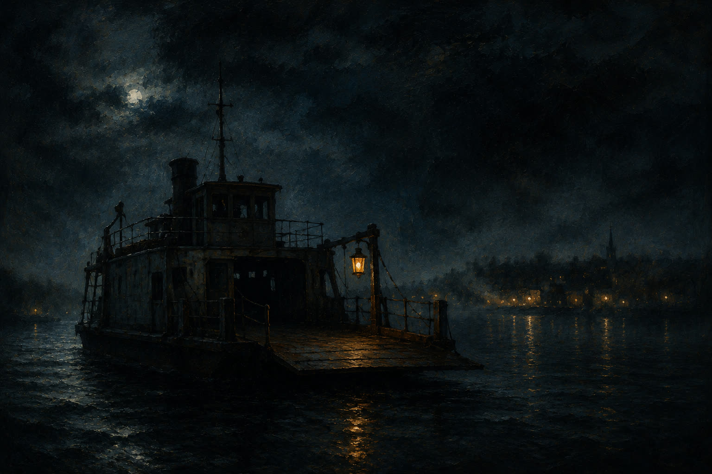

Baglokalet · worlds & creative work
The back room
stays half-lit.
Worldbuilding, fictional fragments, cozy horror, unfinished experiments. Things kept here are allowed to stay strange — not every door should be opened all the way.
Solis Lantern Chronicles solis.gamestormers.dk
The most public of the worlds: an evolving, slightly mythological space about mood, identity and systems. The lantern is already lit; the rest of the map is still being drawn.
The Night Ferry
A cozy-horror setting kept in a drawer: a ferry that only docks in towns that have begun to forget something important. The crew serves coffee. The passengers compare what they still remember. No one disembarks alone.

Unfinished experiments
A weather system for websites. A map that remembers footsteps. A journal that only opens after dark. Some of these will become real; the rest are doing important work as ideas.
a harbor is a promise
that the dark is navigable —
that someone before you
left a light on, on purpose.
— don't finish everything. some doors are better left ajar.